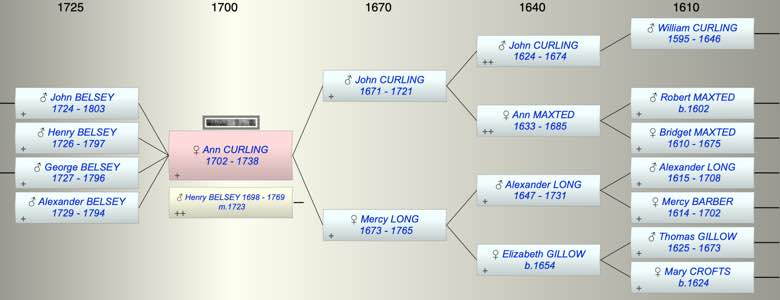
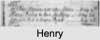

| [Index] |
| Ann CURLING (1702 - 1738) |
|  |
|  |
| b. 1702 at St Laurence |
| m. 25 May 1723 Henry BELSEY (1698 - 1769) at Lydden |
| d. 1738 at Lydden aged 36 |
| Parents: |
| John CURLING (1671 - 1721) |
| Mercy LONG (1673 - 1765) |
| Children (4): |
| John BELSEY (1724 - 1803) |
| Henry BELSEY (1726 - 1797) |
| George BELSEY (1727 - 1796) |
| Alexander BELSEY (1729 - 1794) |
| Grandchildren (7): |
| Isaac BELSEY (1755 - ), Elizabeth BELSEY (1757 - ), John BELSEY (1762 - ), Ann BELSEY (1765 - ), Mercy BELSEY (1768 - ), Henry BELSEY (1770 - ), Jane BELSEY (1758 - ) |
| Events in Ann CURLING (1702 - 1738)'s life | |||||
| Date | Age | Event | Place | Notes | Src |
| 1702 | Ann CURLING was born | St Laurence | Note 1 | ||
| 1721 | 19 | Death of father John CURLING (aged 50) | St Laurence | ||
| 25 May 1723 | 21 | Married Henry BELSEY (aged 25) | Lydden | Note 2 | |
| 1724 | 22 | Birth of son John BELSEY | Coldred | Note 3 | |
| 1726 | 24 | Birth of son Henry BELSEY | Coldred | Note 4 | |
| 1727 | 25 | Birth of son George BELSEY | Coldred | Note 5 | |
| 1729 | 27 | Birth of son Alexander BELSEY | Coldred | Note 6 | |
| 1738 | 36 | Ann CURLING died | Lydden | Note 7 | |
| Personal Notes: |
| Ann's mother's will indicates that Ann marrried a Belsey and had 4 children. |
| Created on a Mac™ using iFamily for Mac™ on 8 Oct 2023 |